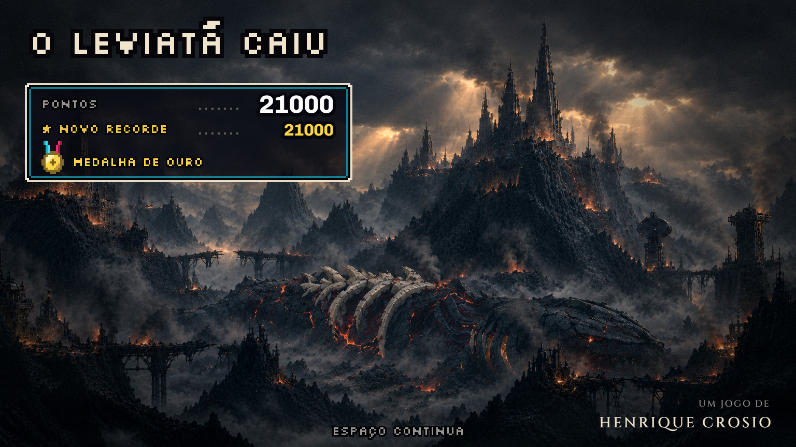
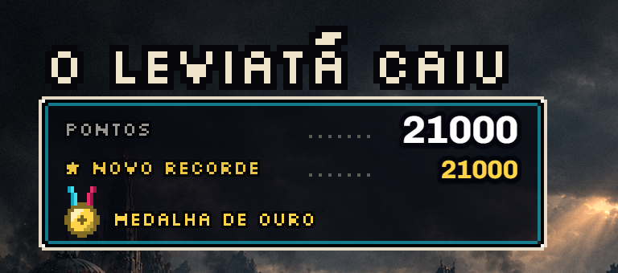
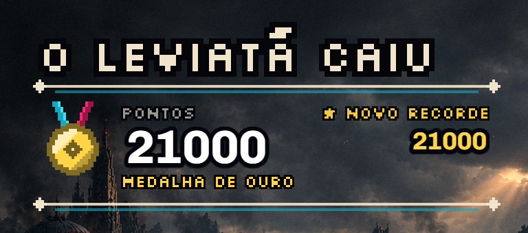
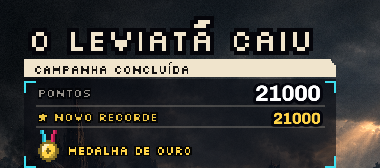
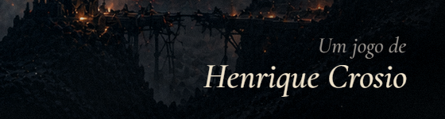
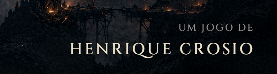
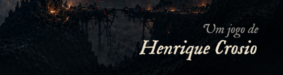
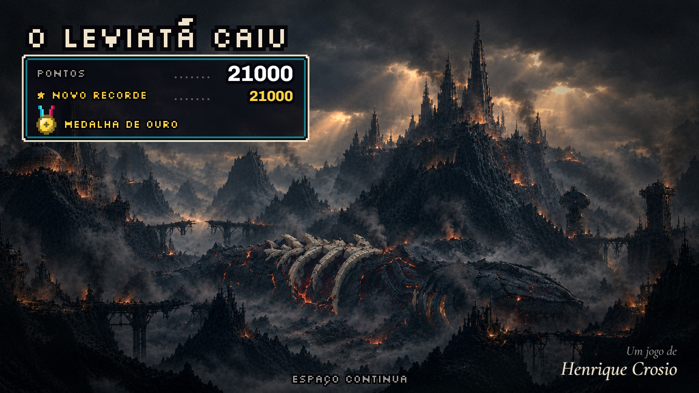
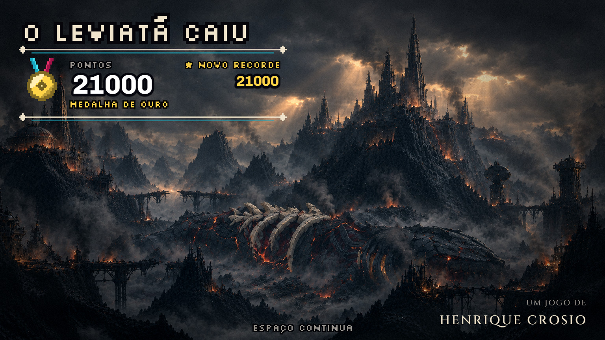
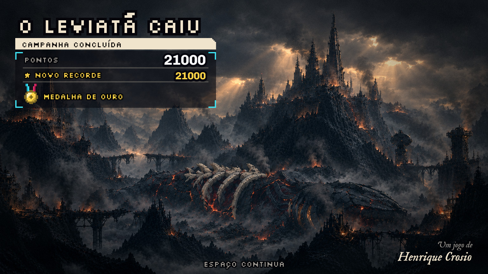

A tela final, rodada 2: o placar e a assinatura
13/11 · bloco I, etapa 3 · a rodada 1 em parte-a.html.
O seu retorno: o crédito à direita, menor, em duas linhas ("Um jogo de" e o nome embaixo), numa fonte mais sofisticada que o resto do jogo, como uma assinatura; e o resultado "muito simples", a refazer com um visual de placar dos grandes jogos de SNES, no estilo do jogo. O letreiro (a letra O) e a pintura ficaram como estavam.
Fechado
A sua escolha: "placar A, Assinatura cinzel (pode diminuir um pouquinho só o tamanho da fonte) [...] O placar pode ficar mais destacado do 'Leviatã caiu', desça ele mais um pouco". Como ficou no jogo:

Os placares B e C e as outras duas fontes saíram do jogo (as fotos abaixo são o registro da escolha).
O placar: três conceitos
Nos três, a medalha é desenhada em pixel (a fita nas cores da nave e do inimigo), os pontos contam de 0 até o valor, e quando a partida bate o recorde o rótulo vira "NOVO RECORDE", aceso e piscando.
A · a janela (instalado)

A caixa de borda dupla dos placares de fim de fase, com o pontilhado do rótulo até o valor.
B · o emblema

Sem caixa: duas réguas finas, a medalha grande e os pontos como o número principal.
C · o relatório

A faixa de cabeçalho, os colchetes do painel da nave e os fios entre as linhas.
A assinatura: três fontes
Embaixo à direita, em duas linhas. Todas são fontes livres (licença OFL).
Cormorant Garamond itálica (instalada)

Cinzel (maiúsculas romanas)

IM Fell English itálica (tipo antigo)

A tela inteira
A + Cormorant

B + Cinzel

C + Fell

O painel e a fonte são independentes: qualquer painel combina com qualquer fonte.
Em movimento (A + Cormorant): a entrada, a contagem dos pontos, a saída na tecla
O que eu preciso de você
- O placar: A, B ou C? Ou uma mistura (por exemplo, a medalha grande do B dentro da janela do A).
- A assinatura: qual fonte, e o tamanho e o lugar estão certos?
- O que ainda falta para o placar ficar com a cara que você imaginou?
Para ver no jogo: [R] no menu.